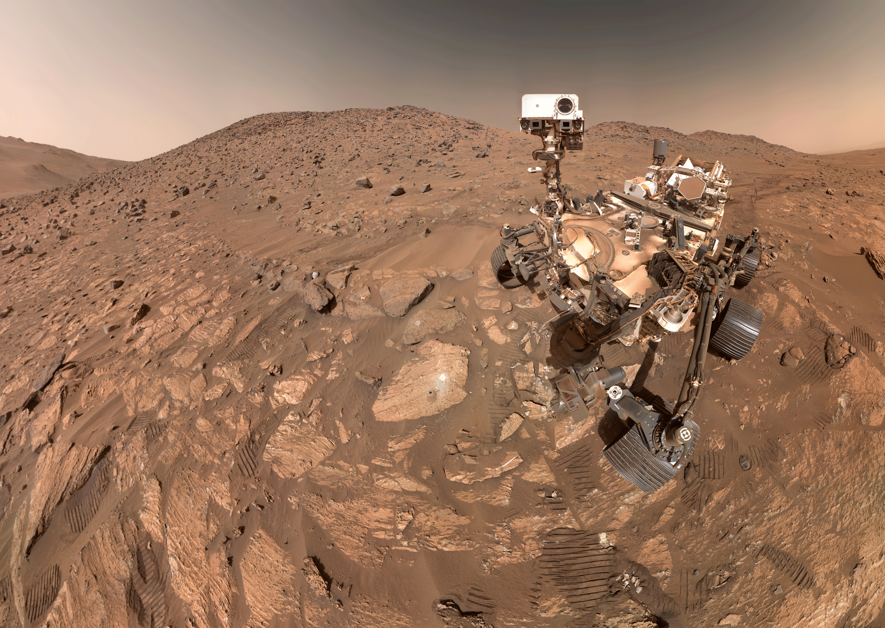

Perseverance
- Mission type
- Mars Surface Exploration and Sample Collection
- Location
- Jezero Crater, Mars (an ancient river delta)
- Launch / deployment
- Launched July 30, 2020; landed February 18, 2021
- Mission duration
- Over five years on Mars so far; the extended mission began in October 2026 and is planned to run until about the end of 2028
- Current status
- Active; exploring the rim of Jezero Crater
Perseverance is NASA’s newest Mars rover. It landed in Jezero Crater, an ancient river delta, and carries powerful science instruments: Mastcam-Z for zoomed color images, SuperCam for laser analysis of rocks, PIXL and SHERLOC for studying minerals and organic materials, MEDA for weather, RIMFAX for looking under the ground, and MOXIE, which made oxygen from the Martian atmosphere.
Scientific achievements
- Collected 29 rock and regolith samples from different areas of Mars, which could one day be returned to Earth for study in laboratories.
- Explored the crater floor, the river delta and now the crater rim, looking for signs of ancient life.
- Tested MOXIE, the first tool to make oxygen from the Martian atmosphere.
Did you know? On October 11, 2026, Perseverance set a record for the longest distance driven by any vehicle on another world: 45.22 km. It covered in five and a half years what took Opportunity almost 15.
Read the NASA mission page
Listen to the story